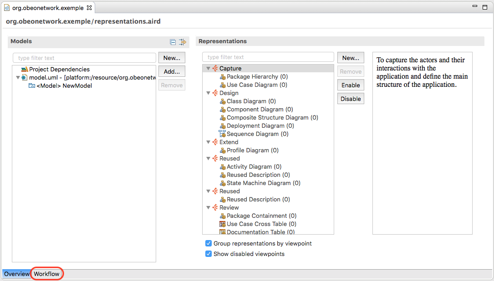
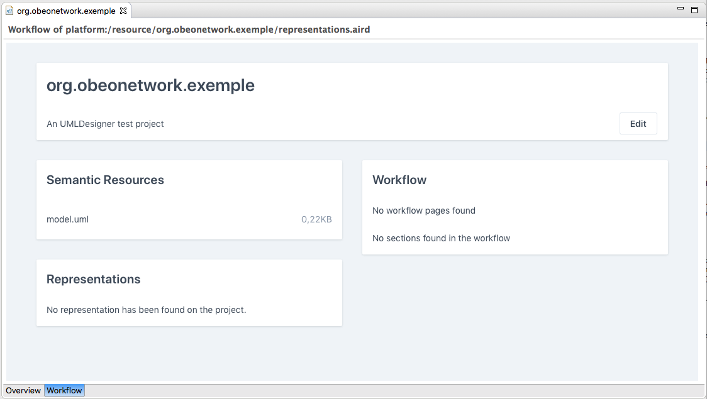
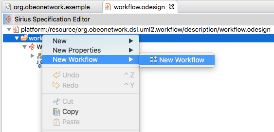
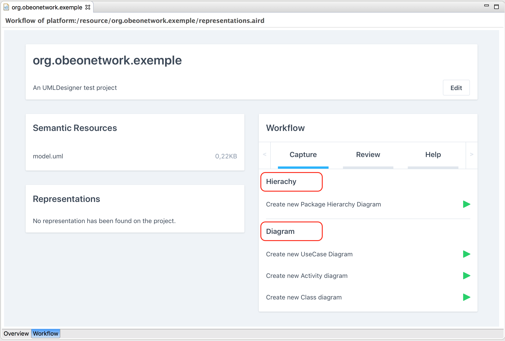

WARNING: This feature is experimental in Sirius 6.0.x. Adopters are encouraged to test it and give feedback, but this sould not be deployed in production. In particular, workflows defined using Sirius 6.0.x may not work at all in Sirius 6.1 and later.
The Workflow section is a new tab included in the aird editor (to open it, double click on the file with aird extension).

The new workflow tab displays both fixed information and information that can be defined in the VSM. The fixed information are the following:

The workflow tile customization can be done by describing its content directly in the VSM.
Workflows are defined around four main concepts:
Workflow,
Page,
Section and
Activity.
Once defined in the VSM, the result will be visible in the workflow tile of the aird editor.
The Workflow Description element can be created under the root element of the odesign from the specific menu item.

This action creates a blank new workflow element. Like many elements inside a VSM , Workflow Description has a mandatory Identifier property (which should be unique), and an optional Name property that has the same value as the Identifer if the user doesn’t customize it.
Inside a Workflow Description element, you can create Page elements.
For each page element, a tab will be created in the workflow tile of the aird editor. The following screenshot shows an example where three pages have been defined: Capture, Review, and Help.
The
Page Description element can be created under the
Workflow Description element from the specific menu item.
This action creates a blank new
page element. Like the
Workflow Description, the
Page Description element has an
Identifier and a
Name property. It also has a
Title Expression element, which will be used to get the label that will be displayed to the user. This field is an
Interpreted Expression
.
WARNING: in the current Sirius version, the Title Expression is not interpreted correctly so you will only be able to use a string directly. This string will be used as the title.
Inside a Page Description element, you can create Section elements.
A section element will create a new subpart in the page. The following screenshot shows two sections Hierarchy and Diagram in the Capture page.

The
Section Description element can be created under the
Page Description element from the specific menu item.
The action creates a blank new
section element. The
section element is similar to the
page element: it has an
Identifier, a
Name and a
Title Expression properties, which all behave like the
page ones.
WARNING: in the current Sirius version, the Title Expression is not interpreted correctly so you will only be able to use a string directly. This string will be used as the title.
Inside a Section Description element, you can create Activity elements.
Activity elements allow specifiers to describe actions. It contains the same properties as section and page elements (i.e. Identifier, Name and Label Expression).
WARNING: in the current Sirius version, the Title Expression is not interpreted correctly so you will only be able to use a string directly. This string will be used as the title.
An activity contains a begin element that allows user to specify a Model Operation .
Once created, the activities will appear in the workflow tile and the user will be able to click on these, and trigger the associated Model Operation.
When writing an
Interpreted Expression
, the user must think of the context on which the expression will be applied. For workflows related element (for instance in the Title Expressions of Pages, Sections and Activities), only one context is available,
self. In this case,
self will be the
DAnalysis of the Sirius session, which is a representation of the odesign file.
Workflow elements are associated automatically with the viewpoints defined in the same odesign file. It means that to display the defined workflows in the correct section of the aird editor, the user will have to activate at least one of the viewpoints defined in the VSM.
If several workflows are activated and shown in the workflow tile, they are all merged in the same workflow tile.